Un decenio de cumbres iberoamericanas , que termina esta semana en Panamá , ha servido para lograr compromisos gubernamentales , llevar a cabo acciones sociales y promover intereses financieros.
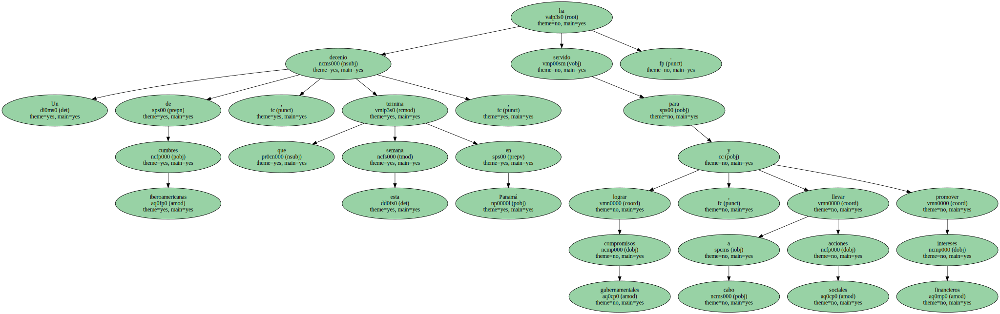Este es un resumen de las nueve declaraciones suscritas hasta ahora por los jefes de Estado y de Gobierno de los 21 países iberoamericanos.
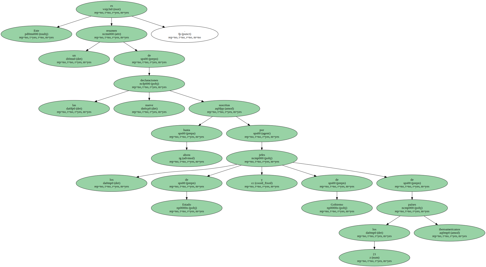I Cumbre ( Guadalajara , México , 1991 ).
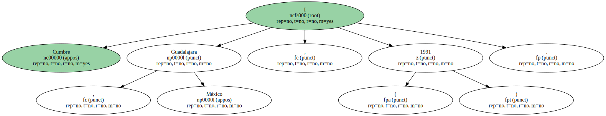La Declaración de Guadalajara destaca el apoyo a los procesos de integración , regional y subregional , y la intensificación de la cooperación iberoamericana.
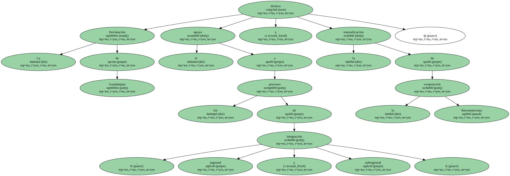Promueve los procesos de negociación que permitan acabar con los conflictos regionales , y se apoya iniciativas sobre el control , reducción y tráfico de armamento.
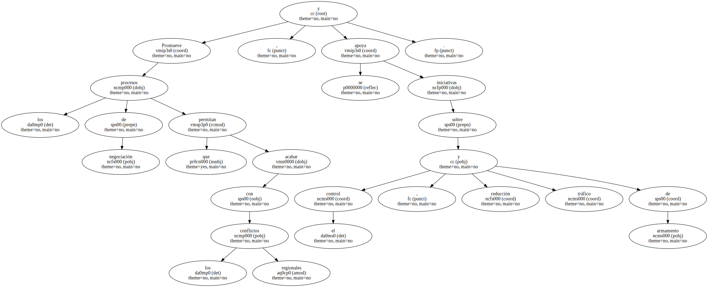Reconoce que la deuda exterior es el principal obstáculo para el crecimiento y la estabilidad de la región , y agrega que " mediante un compromiso serio de políticas económicas y financieras se pueden alcanzar desarrollos sociales ".
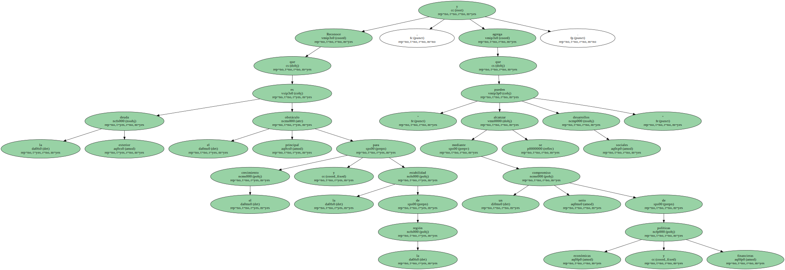En Guadalajara se propició el establecimiento de relaciones consulares de Cuba con Colombia y Chile - que habían roto sus lazos diplomáticos en la década de los setenta.
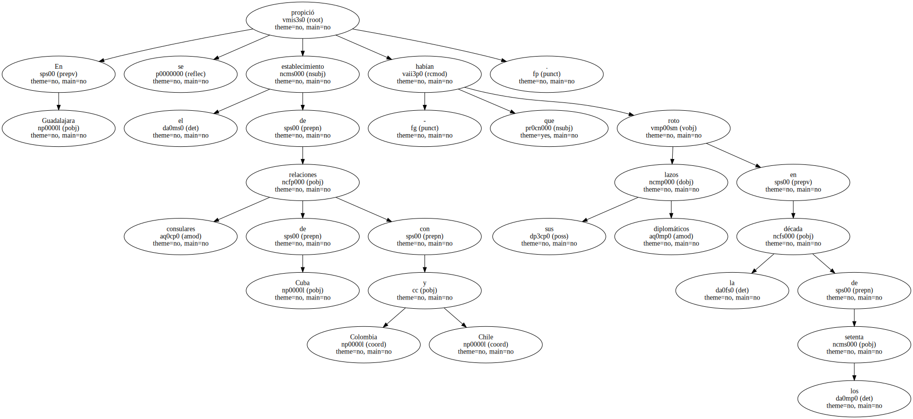II Cumbre ( Madrid , España , 1992 ).

El documento final mostró la preocupación que despierta el proteccionismo comercial , y expresó su deseo de promover iniciativas concretas para la movilización de recursos financieros hacia la región latinoamericana.
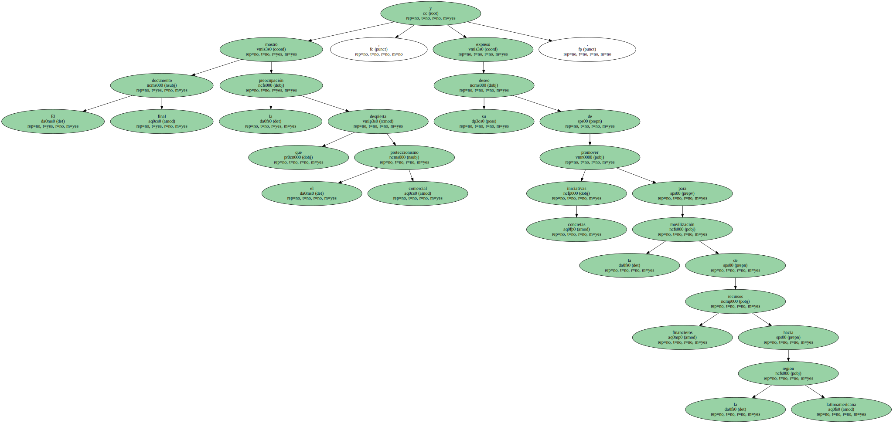Se aprobaron programas de cooperación universitaria y movilidad de posgraduados , investigación tecnológica , escolarización básica de niños y alfabetización de adultos , así como la creación del Canal de Televisión Educativa Iberoamericana ( ICI ) , que comenzó a emitir el 5 de julio de 1993.
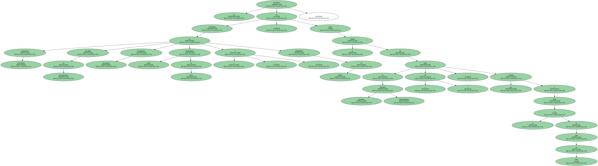Se suscribió el programa del Fondo para el Desarrollo de los Pueblos Indígenas.
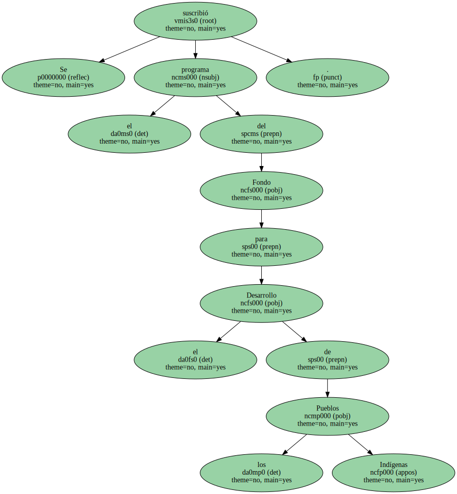III Cumbre ( Salvador de Bahía , Brasil , 1993 ).

Bajo el lema " Un programa para el desarrollo " , el texto de la Declaración resaltó la necesidad de impulsar el diálogo Norte-Sur , acabar con el proteccionismo y dar prioridad a las negociaciones del Acuerdo General sobre Aranceles Aduaneros y Comercio ( GATT ) , así como conjugar el desarrollo social con el progreso económico.
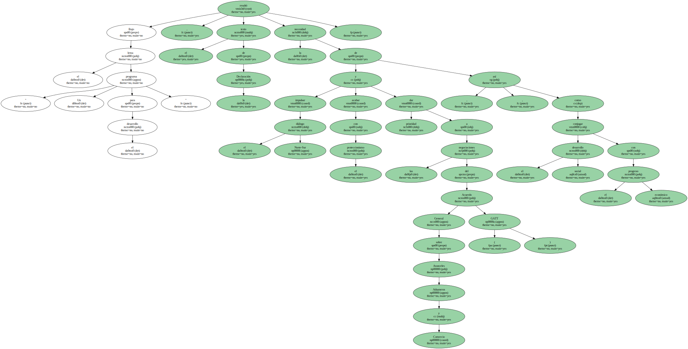Se destacaron los programas conjuntos puestos en marcha , como el Fondo Indígena , con sede en Bolivia , y los programas de educación.
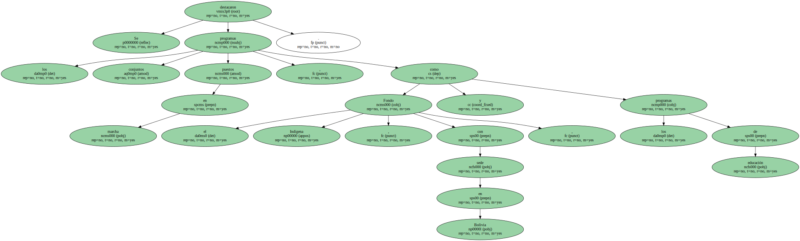IV Cumbre ( Cartagena de Indias , Colombia , 1994 ).
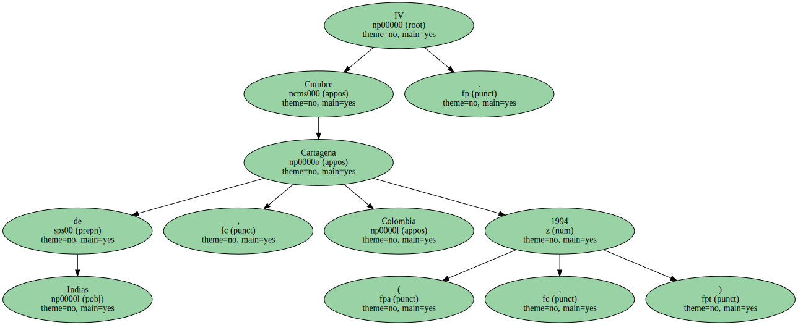El desarrollo , la integración y la cooperación fueron los asuntos protagonistas de esta reunión.
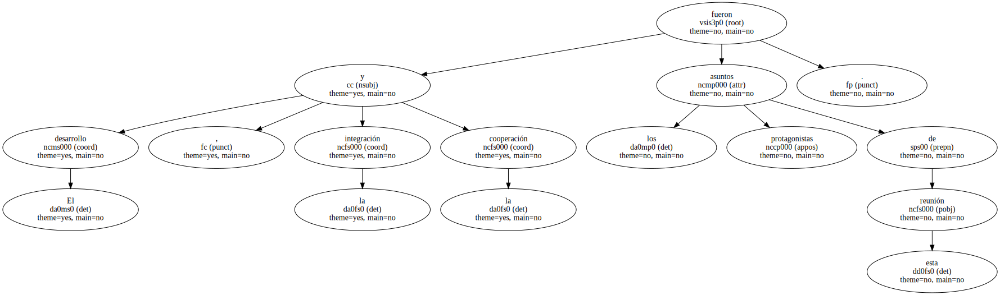Resaltó la firma de un acuerdo entre el Grupo de los Tres ( G-3 ) , integrado por Venezuela , Colombia y México , y la Asociación Latinoamericana de Integración ( ALADI ) , formada por 11 países latinoamericanos , así como la propuesta para un desarrollo sostenible , presentada por Centroamérica.
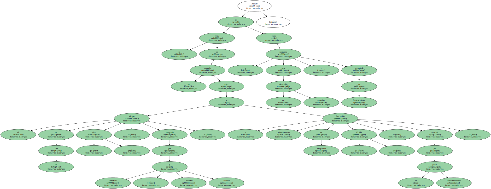La Declaración de Cartagena apostó por el libre comercio y el progreso sin renunciar a los aspectos sociales , e incluyó una referencia al bloqueo o embargo impuesto por Estados Unidos contra Cuba desde principios de los sesenta.
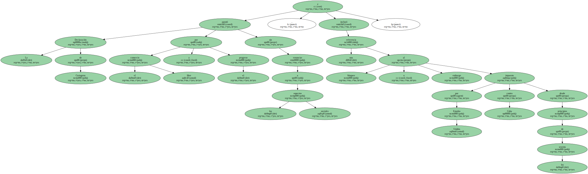V Cumbre ( Bariloche , Argentina , 1995 ).
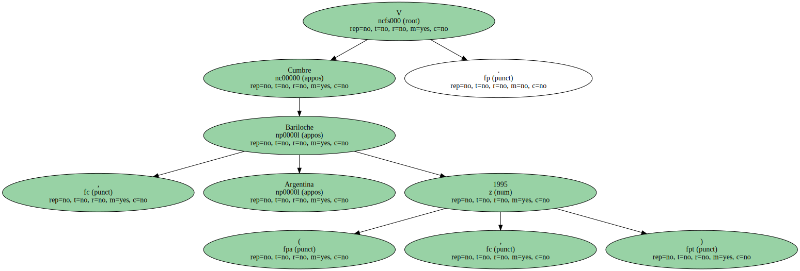Por primera vez , los gobernantes iberoamericanos rechazaron de forma más o menos explícita el embargo estadounidense contra Cuba , que el presidente cubano , Fidel Castro , consideró " suficiente " , y deploraron los ensayos nucleares.
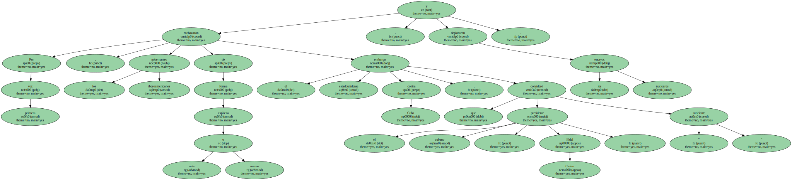Con el lema " La educación como base para el desarrollo " , se aprobaron trece programas de cooperación educativa , materia esencial para consolidar la democracia y lograr el desarrollo social.
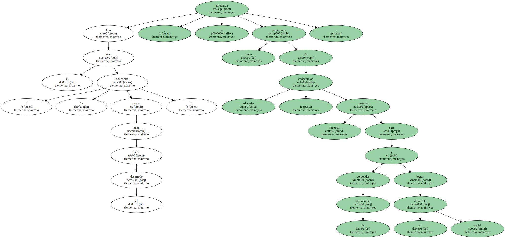VI Cumbre ( Viña del Mar , Chile , 1996 ).
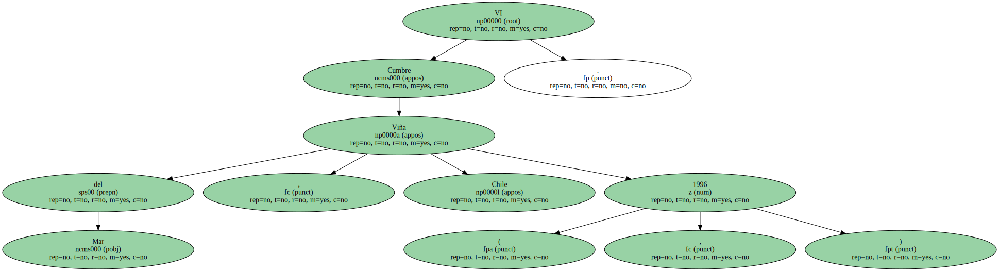La Declaración de Viña del Mar , dedicada a la " Gobernabilidad y la democracia " , reafirmó el compromiso con el sistema democrático , el Estado de Derecho , el pluralismo político , los derechos humanos y las libertades fundamentales como " marco de la gobernabilidad para una democracia eficiente y participativa ".
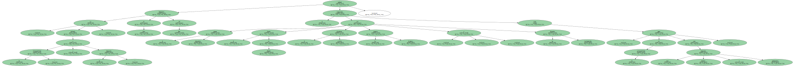Se puso como objetivo consolidar las democracias y fortalecer las instituciones y la cultura democrática.
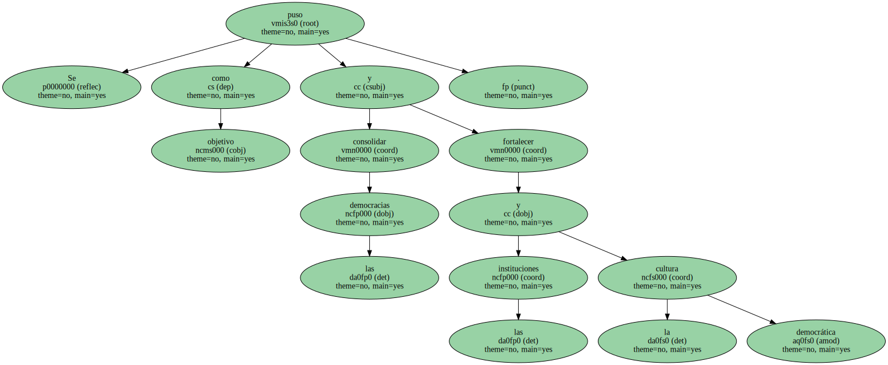La declaración propugnó trabajar por la igualdad social y consolidar las bases socioeconómicas para posibilitar una democracia integral , así como asumir las oportunidades que ofrecen la globalización del comercio.
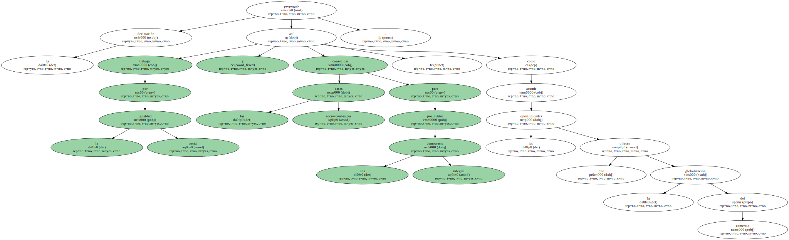La gobernabilidad requiere , según la Declaración , transformaciones sociales , económicas y culturales profundas que conduzcan a disminuir las desigualdades y la exclusión social , y a superar la pobreza , la corrupción , el terrorismo , el narcotráfico , el lavado de dinero y cualquier forma de delincuencia organizada.
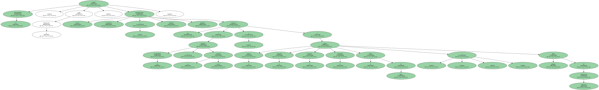VII Cumbre ( Margarita , Venezuela , 1997 ).
Dedicado a " Los valores éticos de la democracia " , el texto final condenó expresamente por primera vez la ley Helms-Burton y otras iniciativas legislativas del Congreso de Estados Unidos para ampliar el embargo económico de este país sobre Cuba.
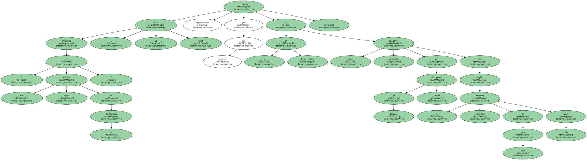Los gobernantes se comprometieron a poner en marcha " nuevas formas de participación " popular y subrayaron la necesidad de modernizar las estructuras de los partidos políticos , a los que se les pidió transparencia en sus medios de financiación.
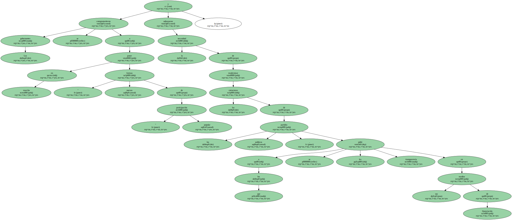Además de la cooperación social y cultural , los 21 países se comprometieron a unir sus esfuerzos para desactivar las minas contra personal y combatir la corrupción , el narcotráfico y el terrorismo.
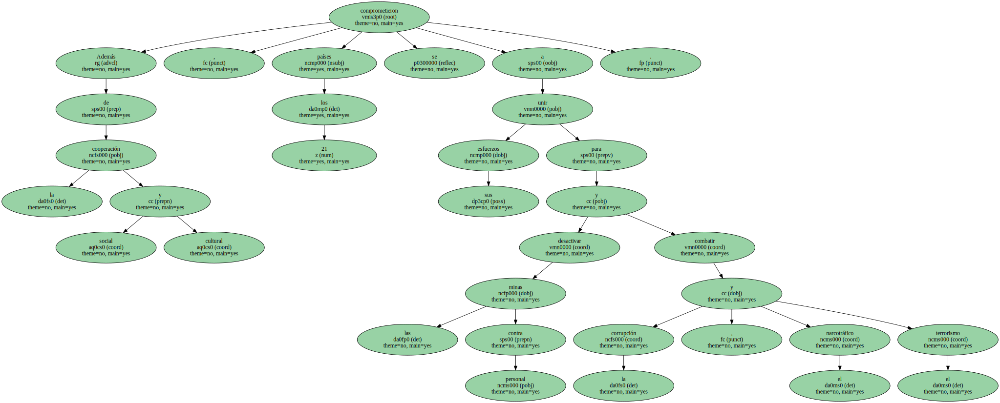VIII Cumbre ( Oporto , Portugal , 1998 ).
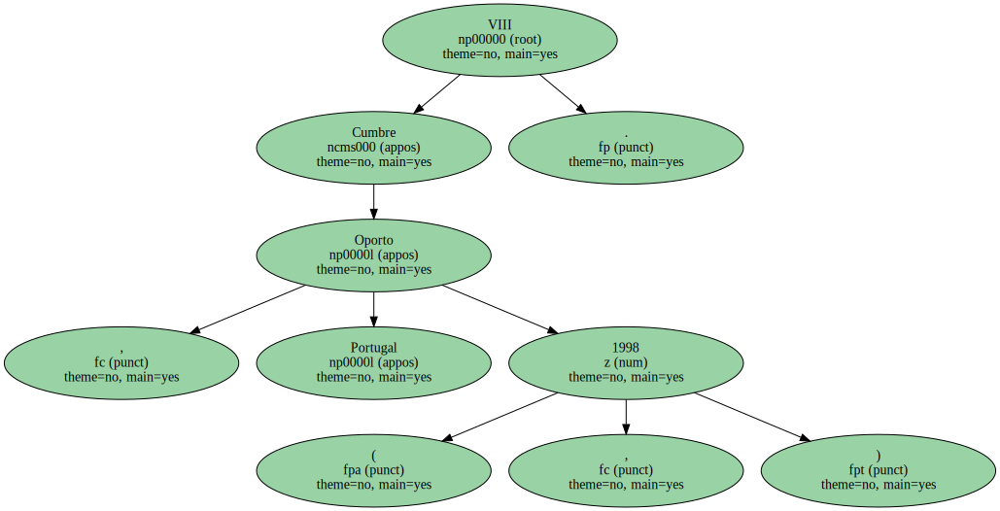Protagonizó esta cumbre la detención en Londres del general chileno Augusto Pinochet por orden de la justicia española , acusado de torturas y genocidio.
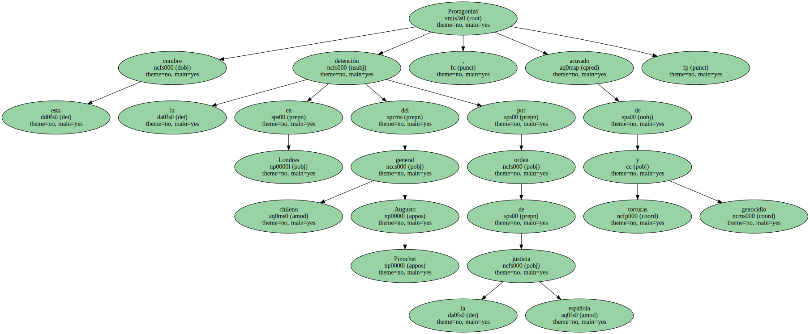La Declaración destacó la preocupación iberoamericana por la situación financiera internacional y el riesgo de que derive en una grave recesión mundial.
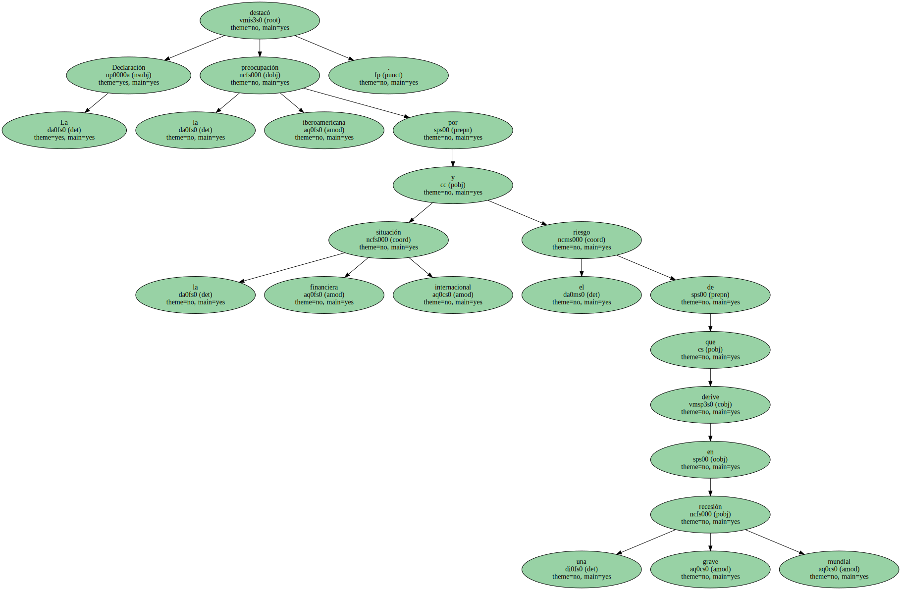El documento final felicitó los esfuerzos de Ecuador y Perú para conseguir en este mismo foro un acuerdo de paz global y definitivo sobre su conflicto fronterizo , y apoyó el proceso de paz de Colombia.
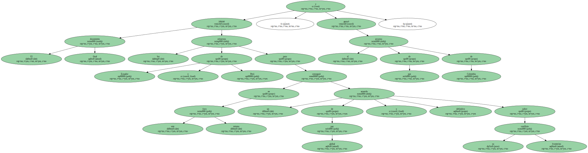Se reconoció el carácter dinámico y creciente de la globalización y de la integración regional como procesos complementarios que pueden favorecer un sistema multilateral de comercio libre.
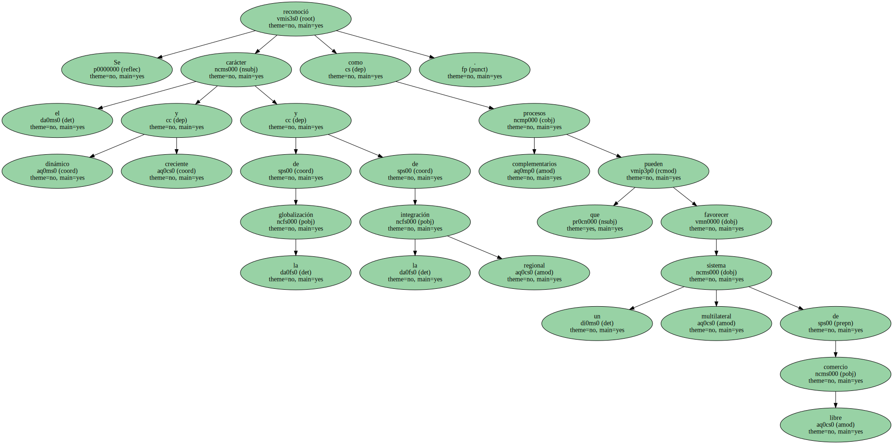IX Cumbre ( La Habana , Cuba , 1999 ).
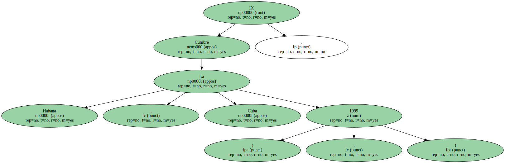Se creó la Secretaría de Cooperación Iberoamericana , con sede en Madrid , y se designó director al mexicano Jorge Alberto Lozoya.
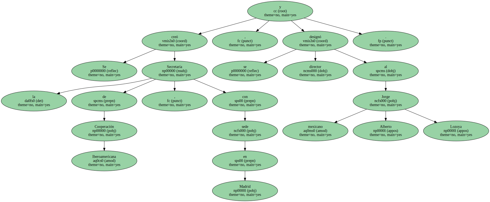Con el tema " Iberoamérica y la situación internacional en una economía globalizada " , la Declaración de La Habana comprometió a los países firmantes a fortalecer el funcionamiento de sus instituciones democráticas , el pluralismo político , el Estado de Derecho y el respeto de los derechos humanos y las libertades fundamentales , incluido el derecho al desarrollo.
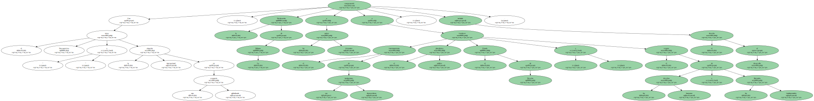Expresó el más enérgico rechazo a la aplicación unilateral y extraterritorial de las leyes o medidas nacionales que infrinjan el Derecho Internacional e intenten imponerse en terceros países.
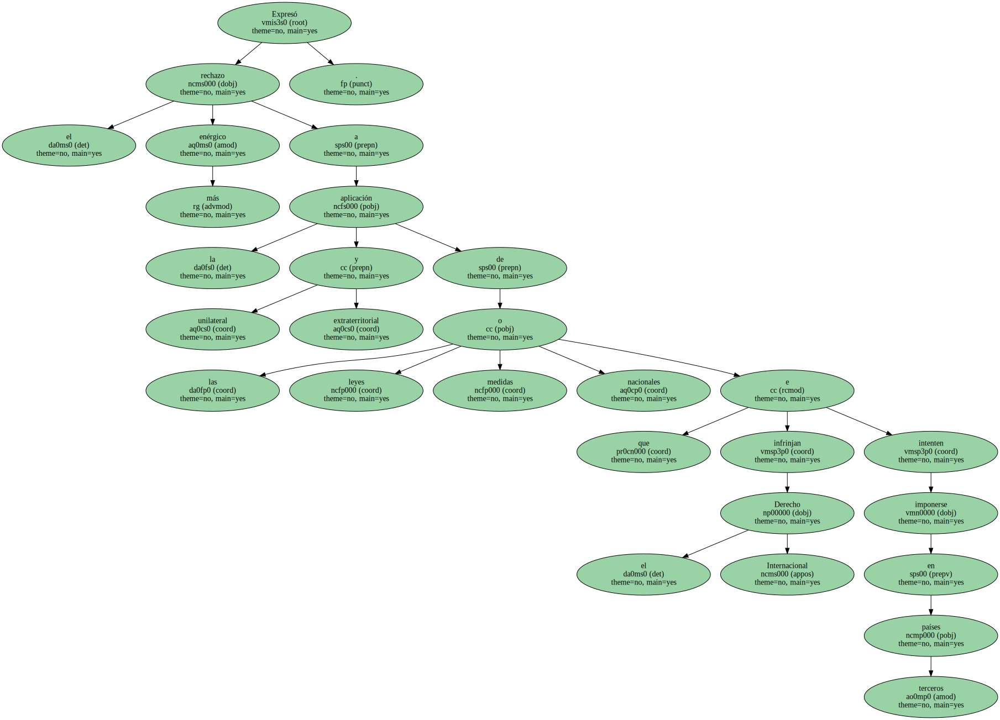Se aprobó el compromiso de trabajar a largo plazo por estrategias globales , regionales y nacionales coherentes ante los desequilibrios de la economía mundial.
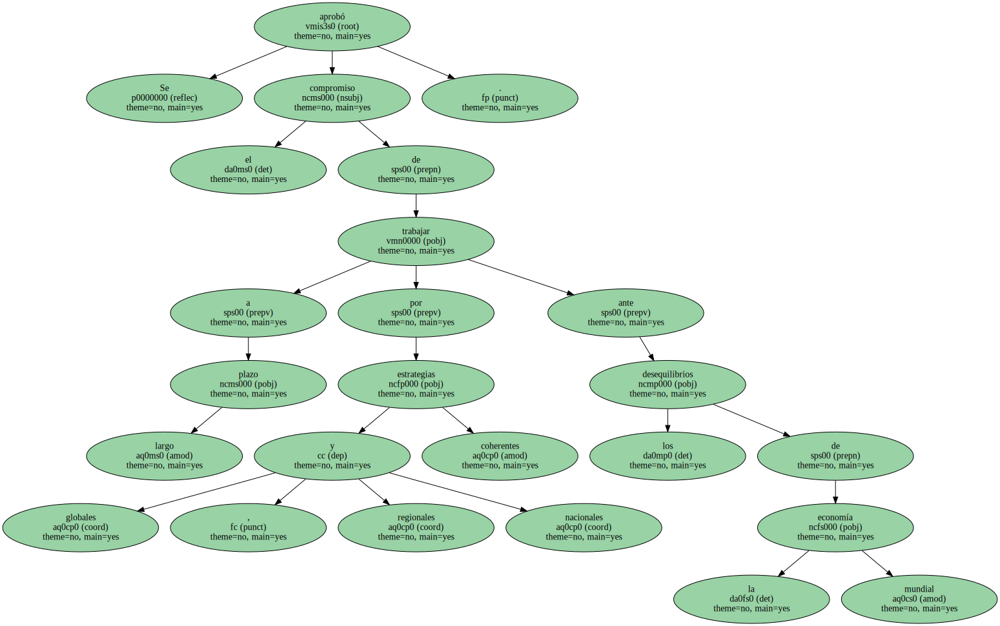Abogó por una solución justa y duradera a la deuda exterior , y reiteró la necesidad de fortalecer la disciplina u transparencia de la supervisión bancaria y las políticas económicas y financieras " sanas " y de continuar con los cambios estructurales.
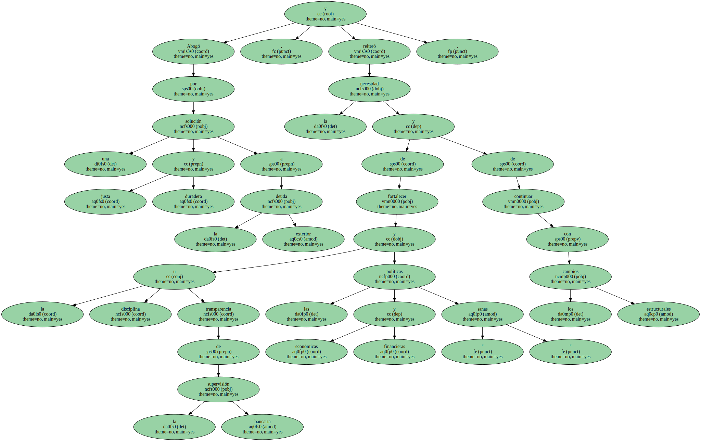Reafirmó el papel del Estado en la adopción de políticas para fomentar el desarrollo humano y la igualdad , y para dar prioridad a la educación , la salud y conservación del medio ambiente.
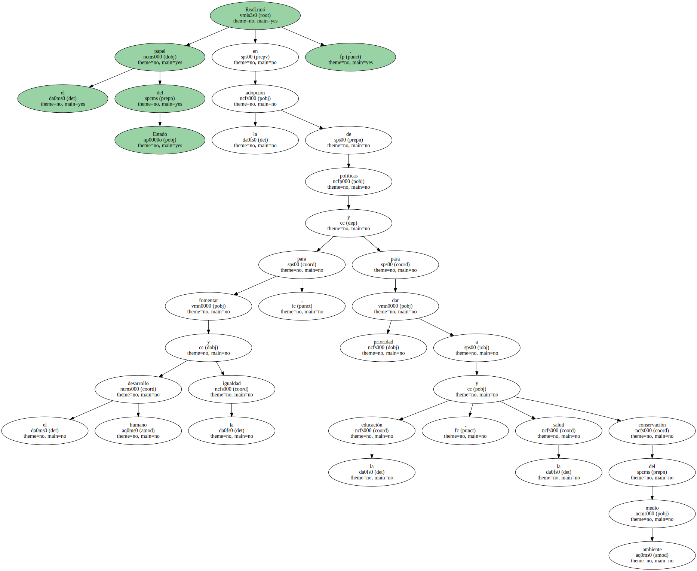